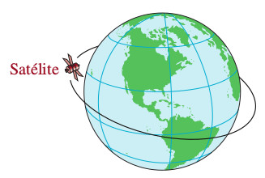
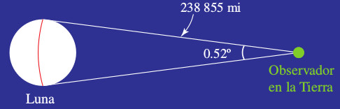
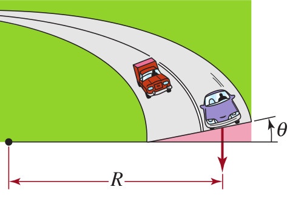
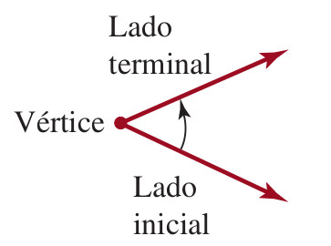
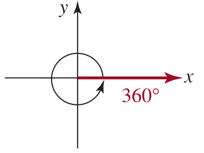
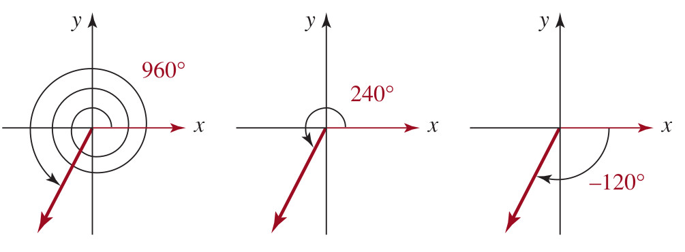
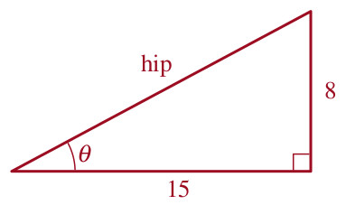
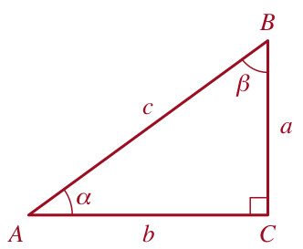
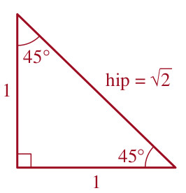
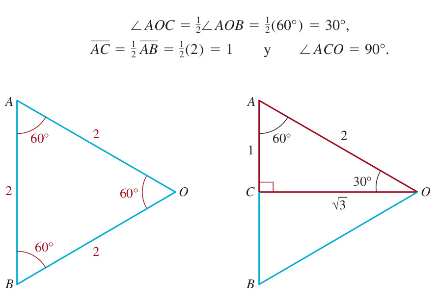

Capítulo 9 Trigonometria
Podcast
9.2 Respuesta: Según WIKIPEDIA
La trigonometría es una rama de las matemáticas, cuyo significado etimológico es ‘la medición de los triángulos’. Deriva de los términos griegos τριγωνοϛ trigōnos ‘triángulo’ y μετρον metron ‘medida’.
En términos generales, la trigonometría es el estudio de las razones trigonométricas: seno, coseno, tangente, cotangente, secante y cosecante. Interviene directa o indirectamente en las demás ramas de la matemática y se aplica en todos aquellos ámbitos donde se requieren medidas de precisión. La trigonometría se aplica a otras ramas de la geometría, como es el caso del estudio de las esferas en la geometría del espacio.
Posee numerosas aplicaciones, entre las que se encuentran: las técnicas de triangulación, por ejemplo, son usadas en astronomía para medir distancias a estrellas próximas, en la medición de distancias entre puntos geográficos, y en sistemas globales de navegación por satélites.




Medidas sátelitales ejemplo de aplicación trigonométrica
Esta es una forma visual de ver aplicaciones trigonométicas; en especial las leyes de Kepler. El Autor:Mónica Juárez Jiménez (https://www.geogebra.org/m/cVHjK2t6) la elaboro usando geogebra.
Ley de Kepler ejemplo de aplicación trigonométrica
Esta es una forma visual de ver aplicaciones trigonométicas; en especial las leyes de Kepler. El Autor:Mónica Juárez Jiménez (https://www.geogebra.org/classic/dtwrfvhd) la elaboro usando geogebra.
9.3 Definición de Ángulo
Definición9.1 Un ángulo se forma con dos rayos o semirectas que tienen un extremo común llamado vértice. A un rayo se le llama lado inicial, y al otro lado terminal. Es útil imaginar el ángulo como formado por una rotación desde el lado inicial hasta el lado terminal.
Podcast explicativo
Es útil imaginar el ángulo como formado por una rotación, desde el lado inicial hasta el lado terminal como se puede ver en la gráfica.

9.4 Medición de un ángulo en grados
Definición9.2 La medida de un ángulo en grados se basa en la asignación de \(360\) grados al ángulo formado por una rotación completa en sentido contrario a las manecillas del reloj.
Podcast explicativo
La medición de un ángulo en unidades de grados se basa en la asignación de 360 grados al ángulo formado por una rotación completa en el sentido contrario a las manecillas del reloj.

9.5 Simplificación de un ángulo medido en radianes
Esta es una forma visual de ver el significado de la simplificación de una medida de ángulo en radianes. El autor Daniel Mentrard (https://www.geogebra.org/classic/x56q2sam) la elaboro usando geogebra.
Entonces un grado \(1^{\circ}\) es el que se forma por \(\dfrac{1}{360}\) de una rotación completa.
Si la rotación es contraria a la de las manecillas del reloj, se dice que la medida del ángulo es positiva.
Si es en el sentido de las manecillas del reloj se dice que la medida del ángulo es negativa.

9.6 Notación para ángulos
\[\begin{equation} \begin{array}{cccc} \text{ángulo recto} &: & \text{ángulo que mide} \ \ 90^{\circ}\\ \text{ángulo agudo} &: & \text{ángulo que mide entre} \ \ 0^{\circ} \ \ \text{y} \ \ 90^{\circ}\\ \text{ángulo obtuso} &: & \text{ángulo que mide entre} \ \ 90^{\circ} \ \ \text{y} \ \ 180^{\circ}\\ \text{ángulos complementarios} &: & \text{ángulo que suman} \ \ 90^{\circ}\\ \text{ángulos suplementarios} &: & \text{ángulo que suman} \ \ 180^{\circ}\\ \end{array} \end{equation}\]
9.7 Minutos y segundos
La fracciones de grados se han expresado en minutos y segundos, donde.
\[ 1^{\circ} = 60 \ \ \text{minutos} \ \ \ \ \ (\text{se escribe}) \ \ \ 60' \]
\[ 1' = 60 \ \ \text{segundos} \ \ \ \ \ (\text{se escribe}) \ \ \ 60'' \]
9.8 Ejemplo
Pasar la medida en grados a grados, minutos y segundos
\[ 86.23^{\circ} \]
Solución:
\[ 86.23^{\circ}=86^{\circ}+0.23^{\circ} \]
Entonces pasaremos la parte fraccionaria de grados a minutos y segundos asi:
\[ 0.23^{\circ}= (0.23)(60')=13.8' \] Es decir:
\[ 13.8'=13' + 0.8' \] Ahora pasaremos los \(0.8'\) a segundos así:
\[ 0.8'= (0.8)(60'')=48'' \] Se concluye afirmando que:
\[ 86.23^{\circ}=86^{\circ}13'48'' \]
9.9 Ejemplo
Pasar de grados, minutos y segundos a grados
\[ 17^{\circ}47'13'' \]
Solución:
\[ 17^{\circ}47'13''=17^{\circ} + 47' +13'' \]
\[ 17^{\circ}47'13''=17^{\circ} + 47\left( \dfrac{1}{60} \right)^{\circ} +13\left( \dfrac{1}{3600} \right)^{\circ} \]
\[ 17^{\circ}47'13''=17^{\circ} + 0.7833^{\circ} + 0.0036^{\circ} \]
\[ 17^{\circ}47'13''=17.7869^{\circ} \]
9.11 Modelo21 (Problema del triángulo)
Determinar los valores exactos de las seis funciones trigonométricas del ángulo \(\theta\) del triángulo rectángulo de la figura

Solución
A partir del teorma de Pitágoras:
\[ c^2=8^2+(15)^2 \ \ \ \ \ \ \ \ \ \ \Longrightarrow \ \ \ \ \ \ \ \ \ \ c=\sqrt{289}=17=\text{hip} \]
Entonces:
\[ \begin{array}{cccc} sen(\theta) & = \dfrac{8}{17}=\dfrac{\text{op}}{\text{hip}}, & csc(\theta) & = \dfrac{17}{8}=\dfrac{\text{hip}}{\text{op}}=\dfrac{1}{sen(\theta)}\\ cos(\theta) & = \dfrac{15}{17}=\dfrac{\text{ady}}{\text{hip}}, & sec(\theta) & = \dfrac{17}{15}=\dfrac{\text{hip}}{\text{ady}}=\dfrac{1}{cos(\theta)}\\ tan(\theta) & = \dfrac{8}{15}=\dfrac{\text{op}}{\text{ady}}, & cot(\theta) & = \dfrac{15}{8}=\dfrac{\text{ady}}{\text{op}}=\dfrac{1}{tan(\theta)}\\ \end{array} \]
Como se muestra en la figura, si los dos ángulos agudos de un triángulo rectángulo \(ABC\) se denominan \(\alpha\) y \(\beta\), entonces

\[ \begin{array}{cccc} sen(\alpha) & = \dfrac{a}{c}=cos(\beta), & csc(\alpha) & = \dfrac{c}{a}=sec(\beta)\\ cos(\alpha) & = \dfrac{b}{c}=sen(\beta), & sec(\alpha) & = \dfrac{c}{b}=csc(\beta)\\ tan(\alpha) & = \dfrac{a}{b}=cot(\beta), & cot(\alpha) & = \dfrac{b}{a}=tan(\beta)\\ \end{array} \]
9.11.1 Actividad Geogebra: Resolver un triángulo rectángulo conociendo la hipotenusa y un ángulo agudo
Author: José María Arias Cabezas
9.11.2 Actividad Geogebra: Resolver un triángulo rectángulo conociendo la hipotenusa y un cateto
Author: José María Arias Cabezas
9.11.3 Actividad Geogebra: Resolver un triángulo rectángulo conociendo los dos catetos
Author: José María Arias Cabezas
9.12 Seis funciones trigonometricas en el plano \(XY\)
Esta es una aplicación la cual muestra las seis funciones trigonométricas dado un punot \((x,y)\) en el plano cartesiano.El Author:Tim Brzezinski (https://www.geogebra.org/m/hK5QfXah) la elaboro usando geogebra.
9.13 Teorema de Pitágoras e identidad trigonométrica
Teorema 9.1 En un triángulo rectángulo, el cuadrado de la hipotenusa es igual a la suma de los cuadrados de los catetos. Si los catetos miden \(a\) y \(b\), y la hipotenusa mide \(c\), entonces: \[a^2+b^2=c^2\]
Podcast explicativo
Teorema 9.2 Para cualquier ángulo \(\theta\) se cumple la identidad trigonométrica fundamental: \[\text{sen}^2(\theta)+\cos^2(\theta)=1\]
Podcast explicativo
Esta es una demostración de la identidad trigonométrica básica. El autor Daniel Mentrard (https://www.geogebra.org/m/gdzedzvk) la elaboro usando geogebra.
9.14 Identidades trigonométricas básicas
Proposición9.1 Para cualquier ángulo \(\theta\) se cumplen las siguientes identidades trigonométricas básicas:
- \(\text{sen}^2(\theta)+\cos^2(\theta)=1\)
- \(1+\tan^2(\theta)=\sec^2(\theta)\)
- \(1+\cot^2(\theta)=\csc^2(\theta)\)
Podcast explicativo
Esta es una manera de memorizar las identidades trigonométricas básicas. El autor Daniel Mentrard (https://www.geogebra.org/m/t6ppq7gs) la elaboro usando geogebra.
9.15 Ángulo de 45 grados

Para obtener los valores de las funciones seno y coseno de un ángulo de \(45^{\circ}\), consideramos el triángulo isóscels con dos lados iguales de longitud uno que se ilustra en la figura de arriba.
\[ (hip)^2=(1)^2+(1)^2=2 \ \ \ \ \ \ \text{da por resultado} \ \ \ \ \ \ hip=\sqrt{2} \]
\[ \begin{array}{cc} sen(45^{\circ}) &= \dfrac{\text{op}}{\text{hip}}=\dfrac{1}{\sqrt{2}}=\dfrac{\sqrt{2}}{2}\\ cos(45^{\circ}) &= \dfrac{\text{ady}}{\text{hip}}=\dfrac{1}{\sqrt{2}}=\dfrac{\sqrt{2}}{2}\\ \end{array} \]
9.16 Ángulo de 30 grados

\[ \begin{array}{cc} sen(30^{\circ}) &= \dfrac{\text{op}}{\text{hip}}=\dfrac{1}{2}\\ cos(30^{\circ}) &= \dfrac{\text{ady}}{\text{hip}}=\dfrac{\sqrt{3}}{2}\\ \end{array} \]
9.17 Ángulo de 60 grados
\[ \begin{array}{cc} sen(60^{\circ}) &= \dfrac{\text{op}}{\text{hip}}=\dfrac{\sqrt{3}}{2}\\ cos(60^{\circ}) &= \dfrac{\text{ady}}{\text{hip}}=\dfrac{1}{2}\\ \end{array} \]
9.18 Ángulos básicos y su representación desde la geometría
Esta es una manera de representar la deducción de los ángulos básicos en el primer cuadrante. El Autor Ignacio Larrosa Cañestro (https://www.geogebra.org/m/VkhUq6qc) la elaboro usando geogebra.
9.19 Fórmulas de adición para coseno y seno
Esta es una demostración de las formulas de adición para el coseno y el seno, el autor Daniel Mentrard (https://www.geogebra.org/m/hxvswnyx) las elaboro usando geogebra.